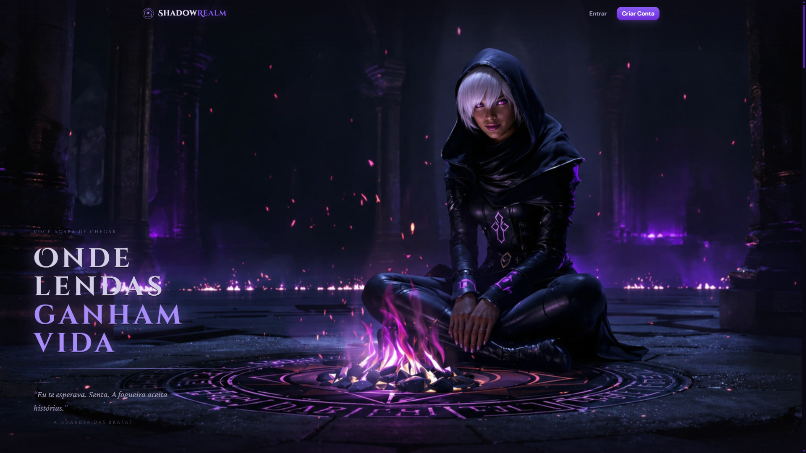
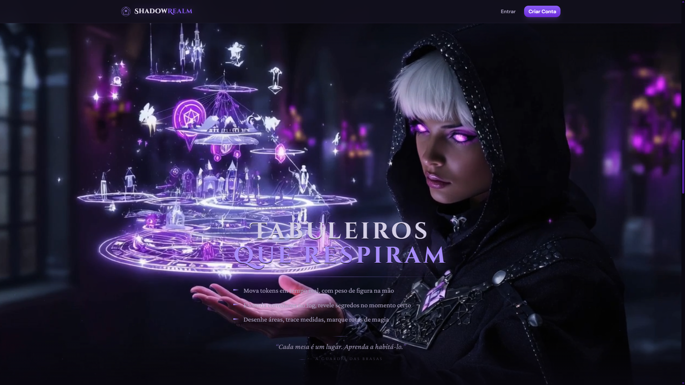
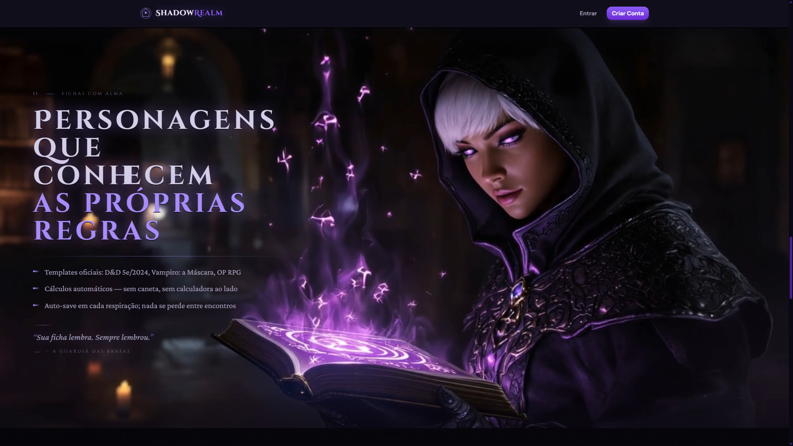
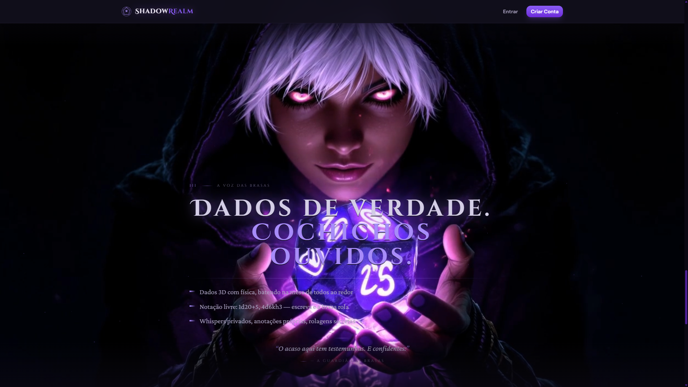

Dez 2025 — Atual
Desenvolvedor de Software
Grupo Apisul · Seguros
- +20,6% velocidade do time · #1 em entregas
- −34% taxa de defeitos por história
- Kubernetes + AWS Cognito em produção
Software Engineer · Porto Alegre, Brasil
Java · Spring Boot · React · PostgreSQL · Kafka
Role para iniciar a jornada
Capítulo I · Manifesto
Mais de 4 anos em produção no setor financeiro, de seguros e tecnologia. Atuo desde a arquitetura até o deploy — e os números contam a história: acelerei o time, reduzi defeitos e liderei em volume de entregas.
Capítulo II · Constelação
Cada estrela é uma ferramenta usada em produção. As linhas mostram como elas se conectam no dia-a-dia.
Capítulo III · Trajetória
Dez 2025 — Atual
Grupo Apisul · Seguros
2024 — 2025
Firedev · Fiserv (Credenciamento)
2023 — 2024
Firedev · Sicredi Pioneira (SGDP)
Ago 2022 — Dez 2025
Firedev IT · Fábrica de Software
Capítulo IV · Projeto Pessoal
Plataforma Virtual Tabletop completa para mestres e jogadores de RPG. Mesas em tempo real, fichas dinâmicas e dados que rolam sob a luz de uma fogueira violeta.
Schema-driven sheets com JSONB, autenticação JWT, upload via MinIO/S3 e arquitetura pensada para crescer.
Java 21 · Spring Boot 3.5 · React 19 · TypeScript · PostgreSQL · WebSocket (STOMP) · Docker
Visitar shadowrealmrpg.com
Capítulo V · Os Três Pilares

Mesas em tempo real via WebSocket STOMP. Cada movimento sincroniza, cada som ecoa.

Templates oficiais para D&D 5e, Vampiro: A Máscara e One Piece RPG. Schema-driven com JSONB.

Dados 3D com física, histórico e modificadores tipados via Zod. Nada se perde, tudo se ouve.
Capítulo VI · A Matéria
Não é stack — é argumento. Cada peça foi escolhida para resolver um problema real.
WebSocket STOMP para sincronia frame-perfect entre mestre e jogadores.
Fichas schema-driven que evoluem sem migrações destrutivas.
Autenticação com rate-limiting. Sessões longas, sem comprometer segurança.
Validação tipada do front ao back. O contrato é a única fonte da verdade.
Upload de imagens e mapas com URLs assinadas. Cresce sem reescrever.
Cobertura unitária e E2E. O que entra em produção foi visto rolar antes.
Capítulo Final · Convocação
Disponível para projetos full-stack, arquitetura de sistemas e lideranças técnicas. Estou em Porto Alegre, mas o céu é o limite.
✦ Porto Alegre · Brasil ✦ (51) 98204-3874 ✦